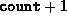

Data Structures and Algorithms
with Object-Oriented Design Patterns in Java
Data Structures and Algorithms
with Object-Oriented Design Patterns in Java
Program  introduces the MWayTree class.
The MWayTree class extends the AbstractTree class
introduced in Program
and it implements the SearchableContainer interface
defined in Program .
The two fields, key and subtree,
correspond to the components of a node shown in Figure .
(Remember, the count field is inherited from the
AbstractContainer base class introduced in
Program ).
introduces the MWayTree class.
The MWayTree class extends the AbstractTree class
introduced in Program
and it implements the SearchableContainer interface
defined in Program .
The two fields, key and subtree,
correspond to the components of a node shown in Figure .
(Remember, the count field is inherited from the
AbstractContainer base class introduced in
Program ).
The first field, key, is an array Comparable object instances. It is used to record the keys contained in the node. The second field, subtree, is an array of MWayTree instances which are the subtrees of the given node.
The inherited count field keeps track of the number of keys contained in the node. Recall, a node which contains keys has  subtrees. We have chosen to keep track of the number of keys of a node rather than the number of subtrees because it simplifies the coding of the algorithms by eliminating some of the special cases.
 Copyright © 1998 by Bruno R. Preiss, P.Eng. All rights reserved.
Copyright © 1998 by Bruno R. Preiss, P.Eng. All rights reserved.